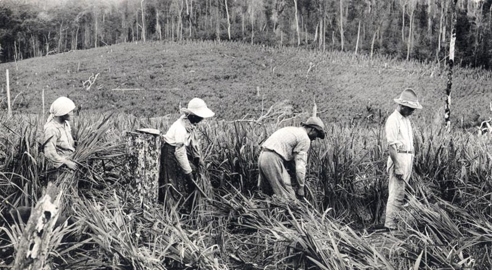

Em um pequeno vilarejo no interior do Brasil, um agricultor chamado João da Terra. Nascido e criado em uma família de agricultores, João sempre acreditou que o trabalho duro e a conexão com a terra eram os pilares da vida no campo. Durante a infância, ele observava seu pai e avô lavrando a terra com arados puxados por bois e plantando sementes manualmente, seguindo os ensinamentos passados de geração em geração.
A vida no campo era árdua e imprevisível. A produção dependia completamente do clima e da força física dos trabalhadores. Enfrentar estiagens prolongadas e pragas que dizimavam as colheitas eram desafios constantes. João via seus familiares lutarem bravamente para manter a produção e sustentar a família, mas muitas vezes, o esforço não era recompensado como esperado. As dificuldades financeiras eram uma constante, e o sonho de um futuro melhor parecia sempre distante.
minha imagem

Ao completar 20 anos, João herdou a fazenda da família após o falecimento de seu pai. Determinado a continuar o legado, ele decidiu que precisava encontrar novas formas de aumentar a produtividade e garantir a subsistência da fazenda. Foi então que ouviu falar de novas tecnologias agrícolas que estavam revolucionando o setor. No começo, João foi cético. Afinal, ele sempre acreditou que a sabedoria dos antepassados era suficiente para prosperar.
No entanto, a curiosidade o levou a participar de uma feira agrícola na cidade vizinha, onde conheceu o engenheiro agrônomo Lucas, que lhe apresentou as maravilhas da agricultura moderna. Lucas mostrou a João as vantagens dos sistemas de irrigação automatizados, tratores modernos, drones para monitoramento de plantações e sensores de solo. João ficou impressionado, mas ao mesmo tempo apreensivo. Ele não tinha conhecimento técnico e temia que o custo das novas tecnologias fosse proibitivo.
Decidido a não deixar a oportunidade escapar, João se inscreveu em cursos oferecidos por cooperativas agrícolas e programas governamentais de apoio ao agricultor. Aos poucos, ele começou a entender como as novas tecnologias poderiam transformar a vida no campo. Com a ajuda de um financiamento rural, João adquiriu um sistema de irrigação por gotejamento, o que reduziu significativamente o desperdício de água e garantiu uma colheita mais estável mesmo durante os períodos de seca.
minha imagem
Logo após, João investiu em um trator moderno de última geração com GPS, que aumentou a eficiência do preparo do solo e do plantio. Ele também adotou o uso de drones para monitorar as plantações, detectando pragas e doenças antes que se espalhassem. Os sensores de solo ajudavam a determinar a quantidade exata de fertilizantes necessários, evitando o desperdício e melhorando a qualidade do solo.
Com o passar dos anos, a produtividade da fazenda de João cresceu exponencialmente. Ele não apenas conseguiu superar as dificuldades financeiras, mas também expandiu suas operações, cultivando novas culturas e criando empregos para outros moradores do vilarejo. A vida de João mudou completamente. Ele agora tinha mais tempo para se dedicar à família e à comunidade, participando de eventos e ajudando outros agricultores a se adaptarem às novas tecnologias.
A história de João da Terra se tornou um exemplo de como a combinação da tradição com a inovação pode transformar vidas. Ele nunca esqueceu suas raízes, mas soube enxergar além dos métodos tradicionais, abraçando o futuro e mostrando que a tecnologia, quando bem utilizada, pode ser uma poderosa aliada no campo.